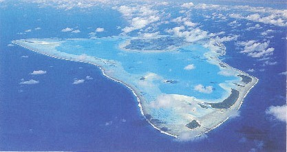
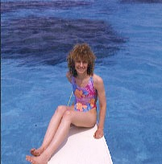
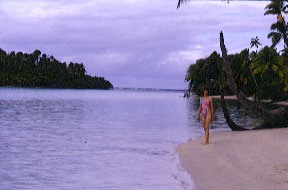
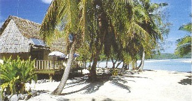

Lovely young blossoms of the Cook Islands. Top 2
photos courtesy of Cook Island Tourism Bureau.
| Home / Dive Resorts / Live-Aboards / Snorkeling / Who We Are / Book a Trip |
Lovely young blossoms of the Cook Islands. Top 2
photos courtesy of Cook Island Tourism Bureau.

Aerial view of Aitutaki Lagoon. For years it's been called by many
travel writers, "the world's most beautiful atoll. Pretty well is.
|
 |
 |
©
ARE TAMANU RESORT, AITUTAKI ATOLL
COOK ISLANDS, South Pacific
(Call us for price-protected rate checks, any time.)
********************************************************
Room rates for all Aitutaki snorkeling vacations include
complimentary tropical breakfast served at the pool bar +
free snorkeling gear, bicycle & canoe use.
Children over 12 years of age are always welcome.
Please, no children under age 12 are allowed in this resort.
******************************************************************
APPROXIMATE CURRENCY EXCHANGE RATE (varies each day):******************************************************************
ROUND-TRIP COMMUTER AIR TICKET
, Rarotonga to Aitutaki Atoll =******************************************************************
(Several text blocks below appear courtesy of Are Tamanu Resort.)
Are Tamanu Beach Hotel has a history going back hundreds of years. Like all lands in the Cook Islands, the land Are Tamanu Beach Hotel is built upon bears the traditional name 'Are Tamanu'. The literal translation of Are Tamanu -- in the Maori dialect of Rarotonga -- is 'house of the mahogony tree'. In keeping with its traditional name, this hotel's 12 luxury self-catering and individual bungalows feature classicly honed Tamanu wood floors and Cook Island style thatched roofs. Tamanu wood is also used in the carvings in each room and the stunning poolside bar. Are Tamanu is a family owned hotel operated with a strong sense of tradition, pride and family values. We invite you to sample a taste of our Cook Island hospitality, on-line. Kia Orana, e Kia Manuia! (Welcome & blessings to you -- from everyone at Are Tamanu Resort !)
LOCATION of ARE TAMANU RESORT
:********************************************
Eating Out & Nightlife near Are Tamanu Resort
:Are Tamanu is ideally situated within cycling & walking distance from a number of restaurants, cafe's and bars, allowing you to eat out at your leisure.
Cafe' Tupuna
:Ralphie's Bar & Grill
:Crusher Bar
:Samade Bar
:Tauono's Garden Cafe'
:Blue Nun Cafe'
:***********************************************
Food & Supplies at Are Tamanu Beach Hotel
:Banking Services
:Internet Services
:Laundry & House Keeping Services
:*********************************************************
FUN HOTEL ACTIVITIES & ISLAND TOURS
:Sunday Night Barbeque
:Motor Bikes & Bicycles
:Aitutaki Snorkeling & Canoes
:Aitutaki Lagoon Cruise
:Fishing Tours
:Golf on Aitutaki Atoll
:Island Night Dancing & Buffet
:Hiking on Aitutaki Atoll
:Scuba Diving in Aitutaki Lagoon
:

Aitutaki Lagoon Resort, ranks after Are Tamanu
Resort as best value lodging on this magical atoll.

(The following article is by John Hessburg, general manager of U.S. Dive Travel Network.)
Here's where the whole adventure started for the owners of U.S. Dive Travel -- Susan & John Hessburg. Until they first visited the Cook Islands in 1990 for their honeymoon, each had been slogging through the 9-to-5 corporate trenches for years. After a good stay in this hospitable South Pacific island nation, where the vistas both topside & underwater were healing & inspiring, John returned to the United States & a few months later dropped his 15 year career as a journalist to found this dive travel company. Susan followed suit a little later & the rest is happy history. As John & Susan like to recall, "If it weren't for the Cook Islands, we'd still be punching the clock & sweating the small stuff." These enchanting South Pacific atolls seem to have been hand-crafted by the Creator for three reasons: to dissolve stress, to stimulate creativity, & to refresh weary hearts & minds.
What's more, the pristine power of the Cook Islands, the magic of the reefs, mountains, deep green jungles, sunny beaches, lagoons & sweet-spirited people have not dimmed a bit. In fact, this remote island haven, like a venerable Pinot Noir, seems to grow mellower & more fragrant with time. Aitutaki Atoll & the Cook Islands will change you deep inside, if you let them.
U.S. Dive Travel represents most of the major hotels, lodges, guest houses & inns in the Cook Islands. We offer remarkable wholesaler bargains on seven of the 15 main islands. Here in this website, however, we'll focus on the best-value lodging & diving options on each of the two most popular islands: Aitutaki Atoll & Rarotonga.
First, let's visit the Aitutaki Atoll, which most travelers visit after a relaxing stay on the main island of Rarotonga. The Cook Islands' capital isle, Rarotonga, is located about 2,942 miles due south of Honolulu, Hawaii & is easily reached from the U.S. West Coast via Hawaii in a mellow day's journey from Los Angeles. Aitutaki Atoll is only about 140 miles to the North of Rarotonga -- less than an hour by twin-engine island hopper. The view as you descend over Aitutaki Atoll is something you won't forget for the rest of your life.
The colors of Aitutaki Lagoon are like surreal cinema. This vast liquid jewel begs you to plunge in and embrace it, to absorb youth and health from it. The lagoon's hue slides from slate gray to iridescent robin's egg blue to hypnotic turquoise, all in a lazy synchrony with the pas de deux of sun and clouds. The brilliant ocean colors, which shift subtly hour by hour as the sun arcs higher, then lower in the sky, then behind clouds, are so perfect, so intense, that many people sit on the shore & stare for hours, engulfed in quiet pleasure, dreaming the meditative daydreams of children. Aitutaki Lagoon gleams & glimmers with colors that not even Velvia film & Leica lenses can capture exactly. Each time you sweep your eyes across this glittering blend of aquamarine, emerald, azure, royal blue, celeste & blue topaz -- with some other strange extraterrestrial glint that defies definition -- you want to tear off your shirt & cannonball off the nearest jetty. You feel the need to wrap this living color up in your arms & take it home with you. The color, the color, it's the color.....it's wild, fresh, magnificent, free. And it only gets better when you don a diving mask & slip under the bath-warm waves to swim around the corals & the scores of sleek little denizens they shelter.
Peace is the currency of workaday life, on all Aitutaki snorkeling vacations, here in the South Pacific -- marrow-deep peace, easy joy. These gracious people won't even take tips from you. That's an insult here in the Cook Islands. Aitutaki snorkeling vacations are about letting it slide, glide & roll with the tide.
Adventure guides & authors who know the Pacific Rim have lauded Aitutaki Lagoon as one of the world's most beautiful lagoons. After more than a score of trips to Polynesia since 1990, we assure you there's not a bit of hyperbole to those writers' claims. Atolls do not come any prettier than this, at least on this planet.
The Aitutaki Lagoon Resort, a comfortable yet rustic place with delicious buffet meals, is by all accounts the best property on the atoll. We recommend it with enthusiasm. The resort features one of the cleanest white-sand beaches on the island, plus a wonderful pool, bar, restaurant, live entertainment, scooter rentals, canoes & kayaks, sailing & windsurfing, nearby golf, fishing & snorkeling, volleyball, & a wealth of island cultural & back-country side tours.
Aitutaki Lagoon Resort is organized in a row of secluded old-fashioned beach bungalows, some with thatched roofs, all with simple Polynesian decor that sets you at ease the moment you enter. Just the scent of the sea breezes, the fresh flowers & jungle plants nearby, the clean wood of the huts, seems to stir peace & romance in a tired heart.
Meanwhile, Aitutaki Scuba Ltd, run by the affable Neil Mitchell with his inflatable raft, is a safe, reliable dive operation that will show you a fine time. For nominal rates, non-diving snorkelers can book a seat on a spacious pontoon boat with renowned reef guide Ria Emil, for an exciting half-day tour to the perimeter of Aitutaki Atoll, where the coralheads will drain every last drop of stress from your frame. Your guides will spear a fine mess of reef fish, then whisk you out to one of a pearl-strand of uninhabited motus (little isles on the atoll rim) for an old-time fish fry on white sandy beaches lined with coconut palms. Talk about living large in the South Pacific. Now while Aitutaki snorkeling is splendid; the fact is scuba diving here is nothing to write home to Mom about, certainly not the sine qua non of Polynesian scuba diving. But the fresh cleanliness of these reefs, & the dance of life on the smaller bommies inside the atoll rim, are well worth the donning of scuba diving gear.
A marvelous array of sea critters are dwelling in the reefs around Rarotonga & Aitutaki Atoll, especially hordes of small, skittery luminescent fish such as parrotfish, triggerfish, eels, & a wealth of wrasses, fusiliers, sergeant majors & other multi-colored tropical beauties. There are scores of lustrous hard coral & tiny fish species, plus slowpoke nudibranchs & giant clams with iridescent purple lips that shimmer like the running lights of flying saucers. This Cook Island reef life that girdles Aitutaki Lagoon & Rarotonga island is enough to start the hearts of even the most city-frazzled folks.
The marine life is beautiful & so are the people of the Cook Islands. Gracious, peaceful, full of laughter & shy humility, the men, women & children of the Aitutaki & Rarotonga are also uncommonly attractive. They are graced with chestnut-cinnamon skin, dark flashing eyes & smiles broad enough to light up a room. It's great fun to just hang loose with these people, sipping a soda & talking story, glancing now & again at the susurrating waves. After a few days on Aitutaki Atoll you'll forget that time, pomp & circumstance ever had any meaning. This is a wonderful South Pacific island to help ease you back to the basics -- health, humor & tranquility.
Prime Minister Geoffrey Henry of the Cook Islands tossed a wry little parable into a speech he gave in Honolulu a few years back. He told of meeting a lovestruck British couple who chose New Caledonia in the South Pacific for their honeymoon. "We were told," they enthused, "that New Caledonia is the closest place to heaven." Mr. Henry said they had been misled. If proximity to Paradise was their mission, he said, they should have honeymooned in Tahiti. That, the chief of state insisted, "is the closest place in the South Pacific to the Cook Islands. And the Cook Islands are heaven."
Further, a riot of local thugs in Papeete, Tahiti, burned down much of their main airport a few years back, so who needs Tahiti? Fact is, many local people on Tahiti island, unless you speak perfect French, are more than likely to ignore you, yawn in your face or turn away, as supremely indifferent to your vacation needs as a Siamese cat with dyspepsia. The Cook Islands have everything Tahiti used to have, with virtually none of the aloofness to foreigners, nor the inflated prices. Forget Tahiti folks, the Cook Islands are a cheaper, kinder alternative, pure & simple. And that goes for Bora Bora & Moorea, too. While the Tuamotus are much friendlier to outsiders, & offer vastly better diving opportunities; Tahiti = expensive cold shoulder; the Cook Islands = affordable friendly hospitality.To label any South Pacific island "Paradise" is a risible cliche in the New Millennium, especially for some place as oversold as Tahiti, yet the Cook Islands not only fit that bill, they transcend guidebook clichés. The otherworldly beauty of these Polynesian islands recalls the past purity of Hawaii's Neighbor Islands & or the once brilliant Tahiti before World War II. The Polynesian people are kind & quiet, the climate ideal, the air redolent of perpetual spring, the seafood & tropical fruits delicious. Service is crisp, accommodations affordable. We have asked ourselves hundreds of times whether it's even right to sell these sacred islands, to facilitate the flow of foreigners out here, where years of curious footsteps might spoil a way of life that's vanishing on our small planet.
So far our worries are unfounded. The true, the good & the beautiful endure. But it's only a matter of time before the traveling cognoscenti of North America, Japan, Europe & Australia discover these South Pacific gems and the secret is out for good. The Cook Islands are destined to be a destination. Only the Second Coming could change that.
Here are more reasons why we love the Cook Islands: gyrating folk dancers reputed to be the wildest in the South Pacific; ancient landlocked coral reefs called makatea, with their razor-sharp ridges and huge uncharted caves; and clandestine male-bonding bashes called tumunu, where the boisterous gab is fueled by stout orange wine that's brewed in hollow palm stumps. What's more, there is the amorous free-for-all of faraway Pukapuka island's annual "Sadie Hawkins-style" jubilee. Imagine this: young women are given traditional license to vent their hottest passions free of any public censure. For several days the women chase down any single men they desire like love quarry; then have their way with the barely protesting gents. Amazing, but it's true. The girls hunt the boys & the boys flee like hell. Heaven help you, buddy, if the ladies catch you.
There are no poisonous insects or animals on land in the Cook Islands, nor malaria nor serious tropical diseases. In fact, on Aitutaki there isn't even one dog to bark & bother you; only a wandering tribe of skinny feral cats that skulk around the resort perimeters like gremlins on high-test espresso. There are no traffic jams; there's no smog, no city chaos, no buildings higher than a palm tree; & you can rent putt-putt motor bikes for a song, to tool around the islands. Voltage is 230 on a 50 DC cycle, the same as Australia & New Zealand. The Cook Island dollar is pegged to the Kiwi buck; & your U.S. dollars go a long, long way down here. (Bring traveler's checks; you'll get a far better exchange rate.)
IMPORTANT RESORT PRICING ADVISORY:
All prices here are in New Zealand dollars, the currency
standard of the Cook Islands. Currency exchange rates are variable, season
to season, so call us for pinpoint quotes & updates. USDT will ensure
accuracy of exchange rates by verifying daily with Bank of America or the
Wall Street Journal. Nominal USDT tariff & a currency exchange
buffer fee are extra costs that will appear on your invoice.
**************************************************
FOR MORE INFORMATION or RESERVATIONS:
E-mail: divetrip@bitstream.net
Website: www.usdivetravel.com
******************************************************
IMPORTANT REMINDER about PRICES & TARIFFS:
All Aitutaki Lagoon dive package prices listed here are subject to possible change in this steadily evolving travel market. Lodging & diving prices are traditionally stable, while air prices can fluctuate daily. Until air tickets are issued, all airlines reserve the right to change airfares without notice -- an industry standard. We at U.S. Dive Travel will price-protect you to the utmost of our professional ability; & that has been our pledge for one decade now. Our Aitutaki Lagoon vacation experts normally secure wholesale discount air tickets for our clients who book early enough to secure limited seats in the best price categories. Remember please, the federal government has deregulated airlines, so only they control their pricing -- not any travel professionals.
Unless specifically noted, these Aitutaki Lagoon snorkeling packages show prices for only the land-based portion of the dive resorts, in most cases reflecting double-occupancy rooms. At most Aitutaki Lagoon resorts, there will be no triple-occupancy rooms offered. Some exceptions will be noted. International & commuter "island-hopper" airfares are always extra above these land costs. Nominal service fees are also extra for air tickets & the vessel + side tour components. The baseline tariffs for all clients start at $35 per person for the land portion + $20 pp for the air tickets. Late-booking clients to Aitutaki Atoll may receive slightly higher tariffs on the lodging + diving at many of our dive resorts. Solo clients will always pay a single supplement to secure a private room -- normally 35% to 50% more -- & possibly a full doubling of the standard double-occupancy rate at some dive resorts.
The preferred payment mode for typical Aitutaki Atoll dive resorts & side tours is by cashier's check or wire transfer in U.S. dollars. All clients living outside the USA or Canada will need to pay for their dive vacations via direct wire transfer in U.S. dollars. No personal checks will be accepted for the land portion of any reservation. Thank you for your gracious understanding. Our service level is the highest & our prices the lowest in this industry, & thus we need to preserve a reasonable margin. For published-fare air ticket bookings, USDT always accepts Visa & Mastercard. For ultra-discount wholesale air tickets to Aitutaki Atoll , USDT accepts only cashier's checks or wire transfers, please.
Remember, all Aitutaki Atoll vacation clients will be asked by local officials overseas, upon departing the airport on your final day, to pay a nominal government departure tax, usually between USD $25 - $40 per client. USDT cannot collect this tax beforehand, so you simply pay it down there, in your host country. Be sure to stash away a little cash for this final moment at the airport, so you'll get your exit visa stamped quickly with no fuss; & away you go. Best of luck with your dive travel plans. We hope your scuba diving vacation is a safe & satisfying adventure. Blessings & best wishes with ALL your snorkeling vacations on Aitutaki Atoll.
Best fishes too!
>////*> <*\\\\<
John Hessburg, General Manager
Susan Hessburg, Operations Manager
Founding Partners of the U.S. Dive Travel Network.
| Home / Dive Resorts / Live-Aboards / Snorkeling / Who We Are / Book a Trip |
© Copyright U.S. Dive Travel Network.